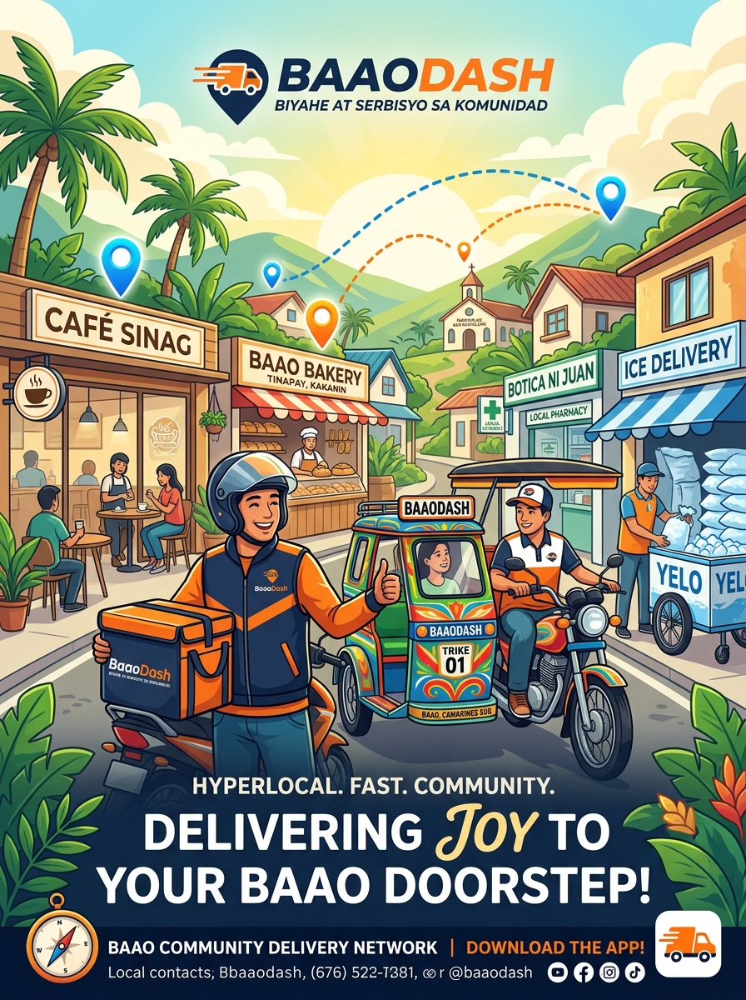

A visual, plain-English guide showing how BaaoDash connects customers, merchants, and riders into a sustainable local delivery network.

🎨 Official BaaoDash Community Vision & Campaign Concept Poster
Who participates in BaaoDash, what they give, and what they get in return.
Local resident, student, family, or professional in Baao.
Local cafes, bakeries, pharmacies, groceries, & hardware stores.
Motorcycle riders + traditional habal-habal & pedicab drivers.
The local orchestrator (Web platform + local dispatch team).
Informed by live data from LJK Consumer Goods Trading (August 2026: 74 deliveries @ ₱18.92 actual pedicab cost), BaaoDash uses two vehicle tiers so delivery fees never crush low-cost goods.
Protects merchants selling low-ticket items (e.g. ₱85 ice bag) using human-powered local drivers.
Affordable for small grocery & ice runs
Preserves standard local ₱15–₱20 rate
Micro-dispatch fee on high daily volume
Preserves 43.9% net profit on bulk ice
For high-margin cafe orders (₱250+) and urgent parcels where gasoline and speed matter.
Standard cross-barangay delivery rate
Fair compensation covering gasoline & vehicle
Platform gross profit margin
Zero commission on merchant food
Step-by-step illustrations of how services operate from start to finish.
Customer already has an item (keys, documents, box, parcel) and needs it brought somewhere.
Customer orders coffee, food, or pastries from a partnered Baao store (e.g. Extraction Point in Poblacion, But First Coffee in San Nicolas).
Founder's Ice Business supplies local cafes & restaurants daily with predictable volume.
Most delivery apps fail because riders leave when there are no orders, and customers leave when there are no riders. The Ice Business guarantees recurring morning deliveries from Day 1. Riders have guaranteed income, which keeps them available on the platform when retail customers want coffee or groceries later in the day!
Big tech apps only work with smartphone-owning motorcycle riders. BaaoDash includes everyone in town.
Use the mobile-friendly web app. Can go online/offline with one tap, view Google Maps navigation, upload photo proof of delivery, and track daily wallet earnings.
Ideal for: Cross-barangay fast food & urgent packagesNo smartphone needed! The central BaaoDash dispatcher calls or SMS messages them, or they check in at a designated local rider hub. The dispatcher manages order updates for them.
Ideal for: Heavy sacks of rice, hardware, & short-distance town tripsHow a focused small-town network scales systematically without burning millions of pesos.
Operate via Facebook / Phone / Web MVP. Anchor with the ice plant delivering to 5–10 cafes. Prove that people pay and riders show up.
Onboard top 10 local cafes, bakeries, and pharmacies. Deploy QR codes and store table tents across Baao Poblacion.
Expand fixed zones to outer barangays. Introduce structured B2B corporate monthly billing for hardware stores & suppliers.
Replicate the proven Baao logistics playbook into neighboring Rinconada municipalities. Become the default logistics spine of the district.